Unity・Azure DevOps・SourceTreeの連携方法について
作成日：2025-12-27 / カテゴリ：Azure DevOps, Sourcetree, Git, Unity
個人開発で、Azure DevOps のリポジトリと SourceTree を連携させて
Unity プロジェクトを管理するまでの手順をまとめたメモです。
実際に行った環境は以下のとおりです。
- リモートリポジトリ（Git管理）：Azure DevOps
- Gitクライアント（操作ツール）：SourceTree（Mac）
- ゲーム開発環境（エンジン）：Unity
手順１：Azure DevOps プロジェクト（リポジトリ）の作成、認種情報の準備
＜Azure DevOpsのセットアップ（重要）＞
まずは「置き場所」を作ります。そして、SourcetreeがログインできるようにPersonal Access Token (PAT) を発行します。これが最も確実な連携方法です。
- プロジェクト作成
- Azure DevOpsにログインし、「+ New Project」をクリック。
- Project nameを入力し、Visibilityは通常「Private」を選択して「CreateProject」。 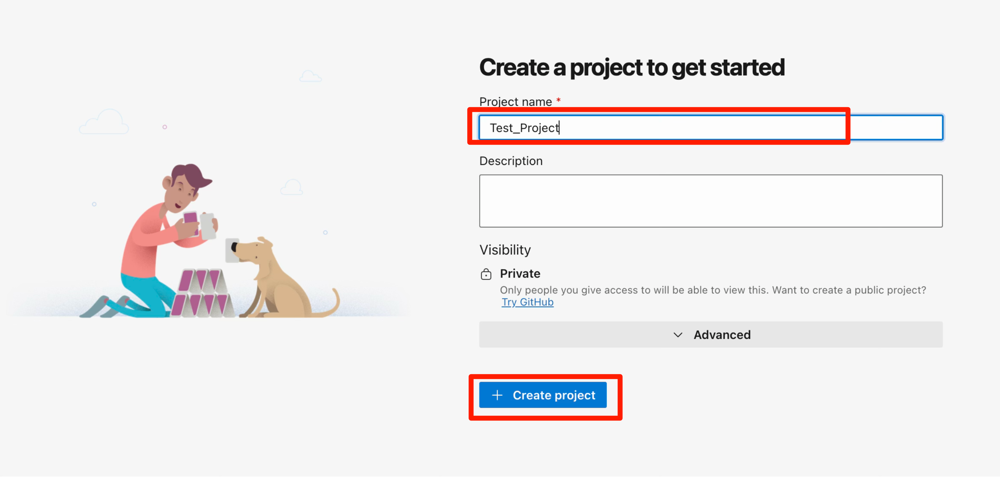
- リポジトリURLの取得
- 左メニューの Repos > Files をクリック。
- 「HTTPS」が選択されていることを確認します。
- （例: https://organization@dev.azure.com/organization/project/_git/project）
- Personal Access Token (PAT) の発行
- ここがポイントです。通常のパスワードではSourceTreeからの認証が弾かれることが多いため、専用のパスワード（トークン）を作ります。
- 右上のユーザー設定アイコン（歯車と人） > Personal access tokens をクリック。
- 「+ New Token」をクリック。 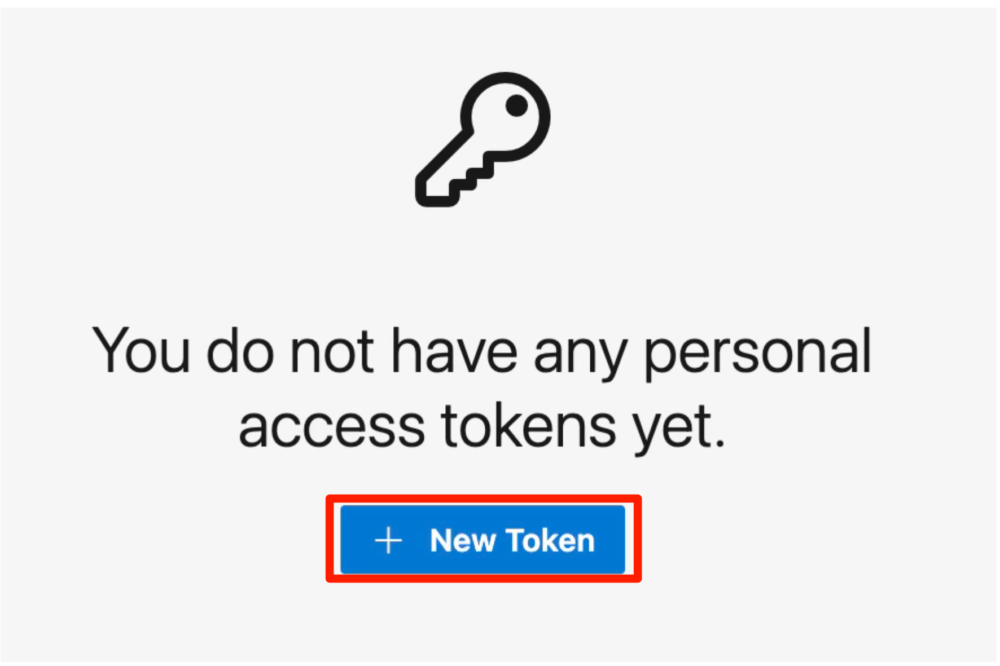
- 「Create」を押し、表示されたトークン（長い文字列）を必ずコピーしてメモ帳などに控えてください。
Name: わかりやすい名前（例: SourceTree）
Expiration: 有効期限（開発期間に合わせて設定）
Scopes: 下の方にある Code の項目で Read & Write にチェックを入れる（これで読み書き権限が付与されます）。
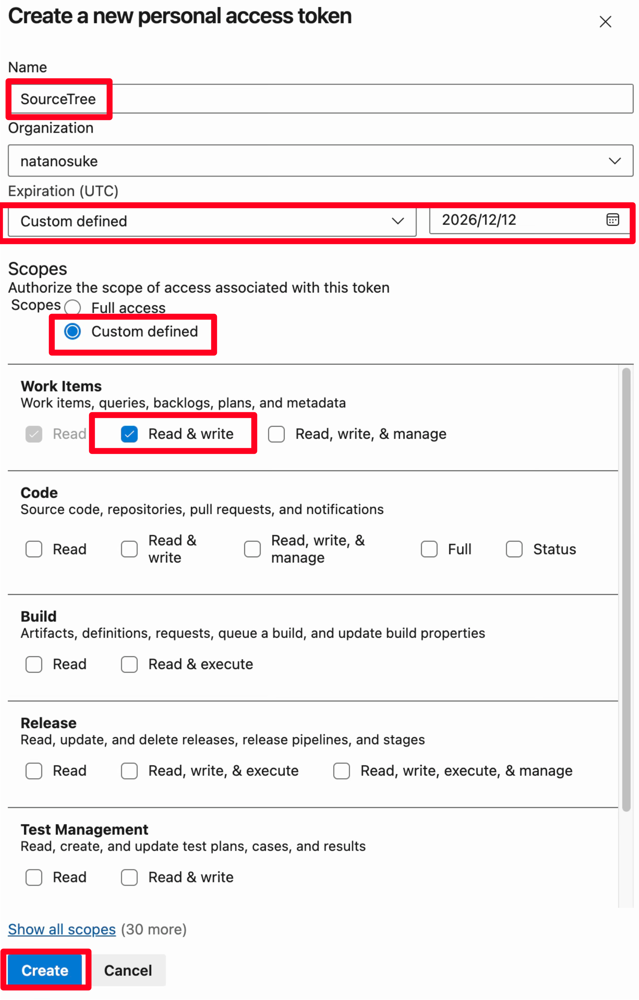> 注意: この画面を閉じると二度と表示されません！
手順２：Unity プロジェクト（リポジトリ）の作成とGit向け設定
＜Unity プロジェクトの準備＞
- Unity Hubからプロジェクトを新規作成します。
- プロジェクト名を入力し、保存場所を確定したら「+ プロジェクトを作成」をクリック。 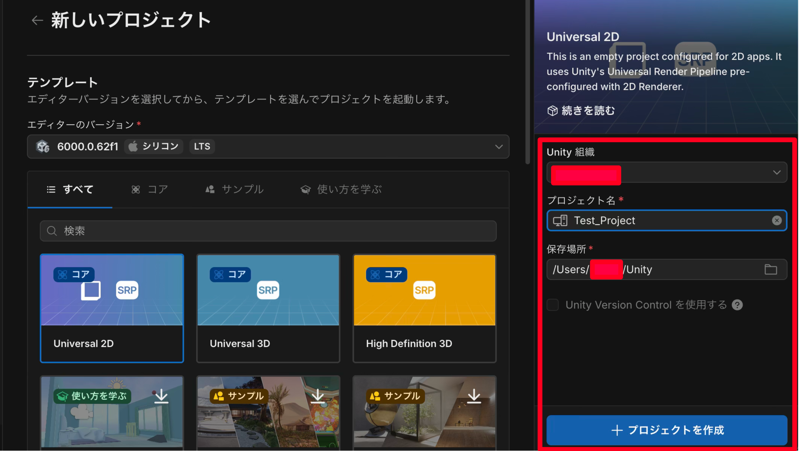
- Unityを一度終了します。
- サイトから取得したinit.shを実行します。
- https://sasami-daifuku.com/unity-project-init-settings-2このサイトからinit.shを取得。
- プロジェクトフォルダにinit.shを保存。
- Unityの初期設定を完了。
- プロジェクトフォルダ選択しつつ右クリックでターミナルを開く。 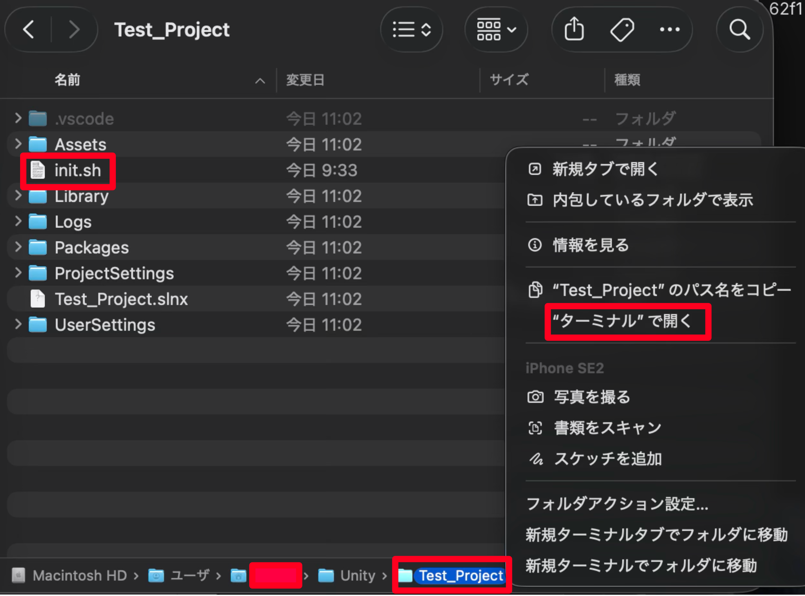
- [sh init.sh]をターミナルに入力しEnterキーを押して実行。
- プロジェクト名を入力し、入力後再びEnterキーを押して実行
- .gitignore、.gitattributesファイルとディレクトリが作成されていることを確認します。
※.gitignore、.gitattributesファイルは隠しファイルのため[Command + shift + .]を押して表示する - .gitignore（Unity 用）の内容
以下のような .gitignore が設定される（サイトから少し追加している）。
# Unity
/[Ll]ibrary/
/[Tt]emp/
/[Oo]bj/
/[Bb]uild/
/[Bb]uilds/
/[Ll]ogs/
/[Uu]ser[Ss]ettings/
/Assets/AssetStoreTools*
# Autogenerated VS/MD solution and project files
ExportedObj/
*.csproj
*.unityproj
*.sln
*.suo
*.tmp
*.user
*.userprefs
*.pidb
*.booproj
*.svd
# Unity3D generated meta files
*.pidb.meta
# Unity3D Generated File On Crash Reports
sysinfo.txt
# Builds
*.apk
*.unitypackage
# Visual Studio
.vs
Release/
Debug/
手順３:Sourcetree ローカル（Unity）とリモート（Azure DevOps）リポジトリの連携
＜Sourcetreeの設定＞
- ローカル（Unity）リポジトリとの接続
- SourceTreeを開き、「新規...」> 「既存のローカルリポジトリを追加」を選択。 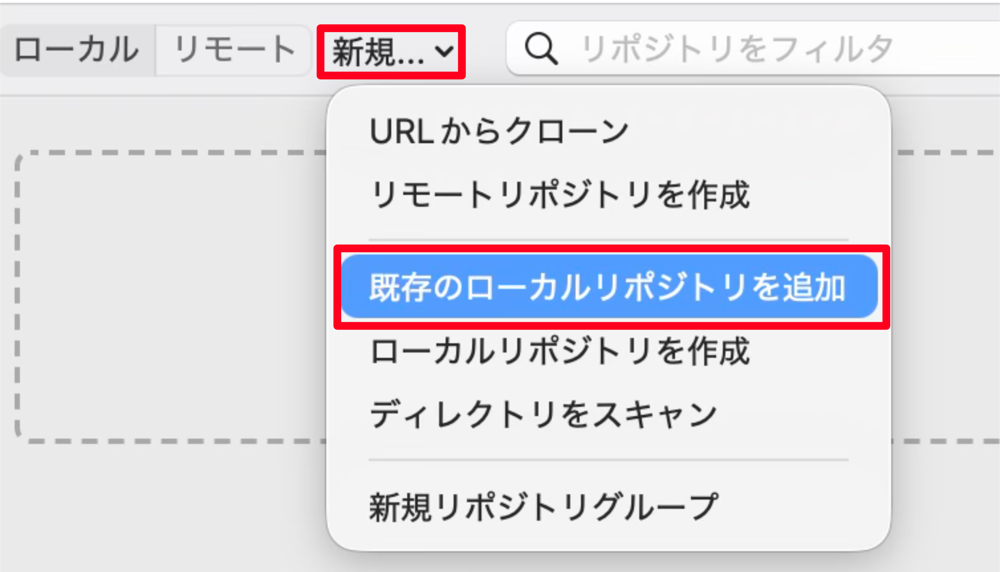
- 「保存先のパス」に、先ほど作ったUnityプロジェクトのフォルダを指定し、作成をクリック。 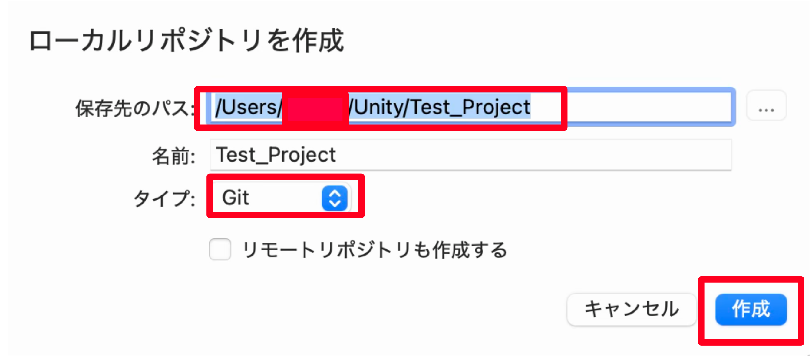
- Azure DevOpsアカウントとの連携
- SourceTreeの「設定」> 「アカウント」タブ > 「追加」をクリック。 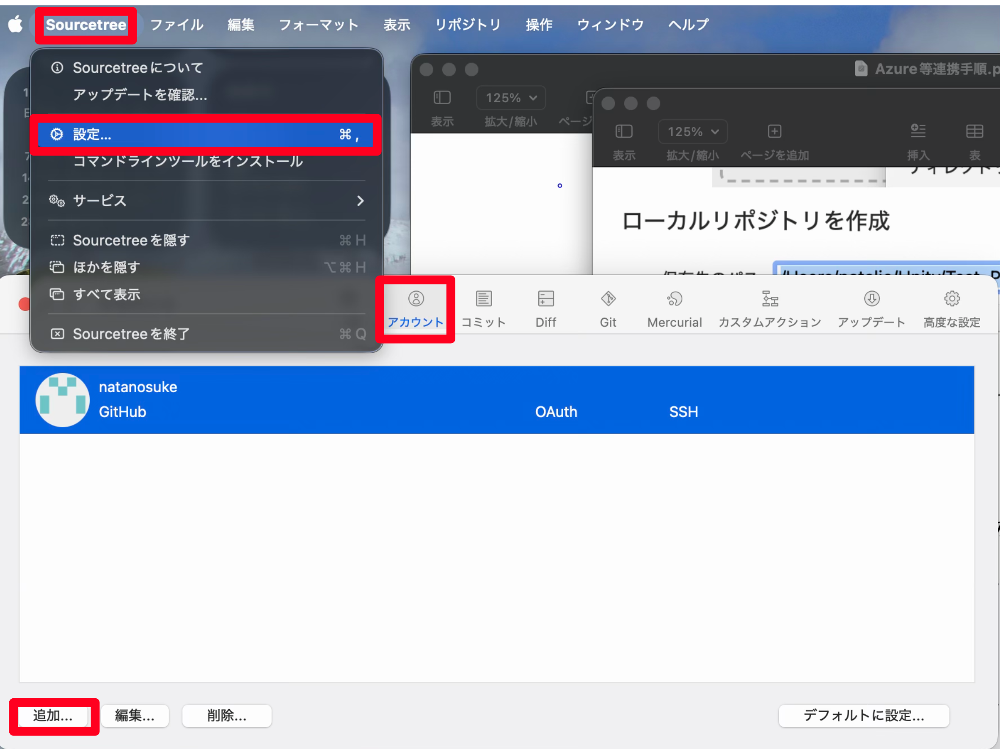
- 必要項目を入力し、「保存」をクリック。
- リモート（Azure DevOps）リポジトリとの接続
- ローカルリポジトリをダブルクリックした後、SourceTreeの「リポジトリ」タブを選択し、「リポジトリ設定」を選択後に「追加」をクリック。 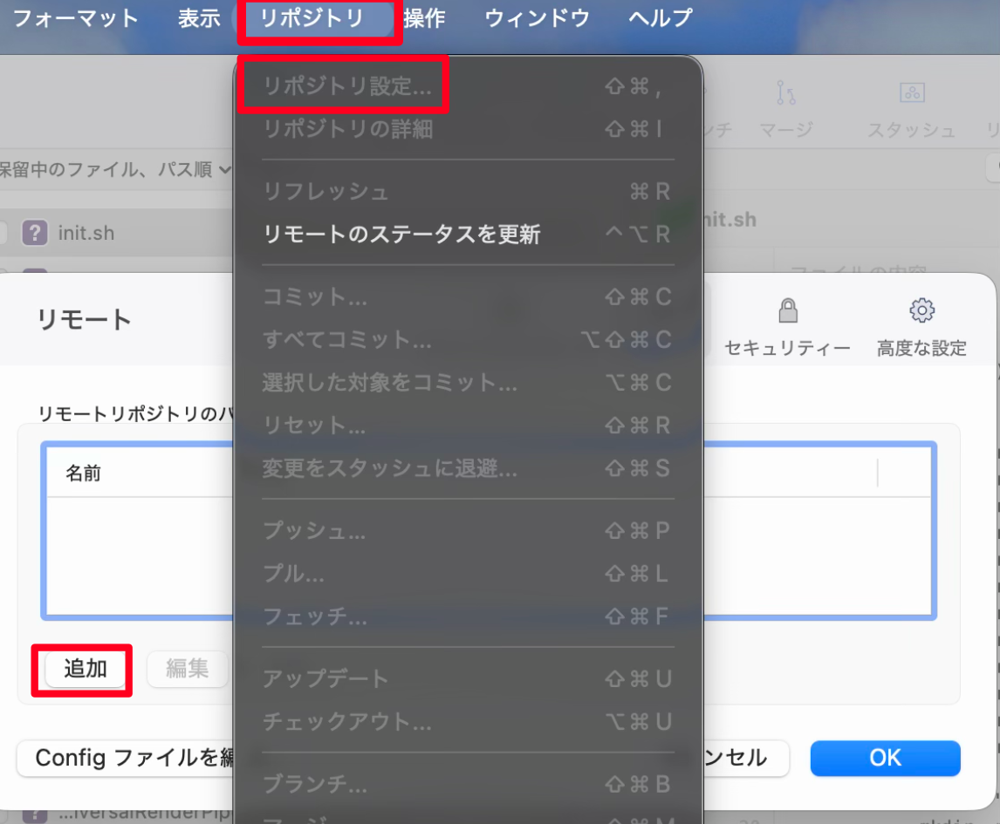
- 必要項目を入力し、「OK」をクリック。
- Gitの操作（認証）
- Sourcetreeのファイルを全部選択し、コミットメッセージに「Initial Commit」を入力し、上部メニューまたは右にある「コミット」をクリック。
- Sourcetreeの上部メニューにある「プッシュ」をクリックし「OK」をクリック。
- Azure DevOpsのリモートリポジトリがプッシュを反映されていれば完了。
ホスト: Azure DevOps
URL: https://dev.azure.com/natanosuke（https://dev.azure.com/[組織名]）
ユーザー名: メールアドレス
Private Token: 手順1-3のPersonal Access Token (PAT)を貼り付け
プロトコル:HTTPS
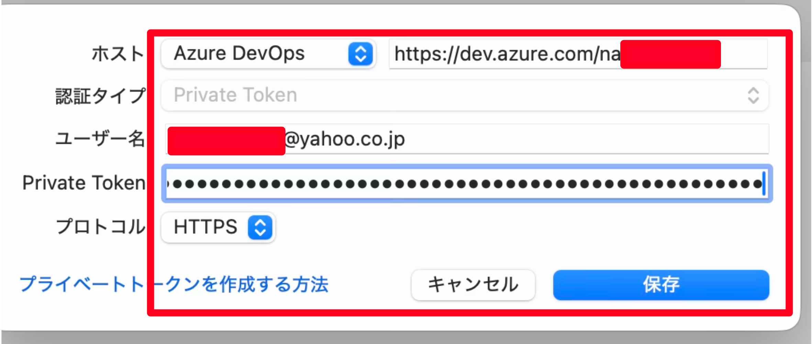> 注意: Personal Access Token (PAT)は複数台PCを使う場合、その都度必要なため管理しておくこと。
リモート名: origin（デフォルトのまま）
URL / パス: Azure DevOpsのHTTPS URL
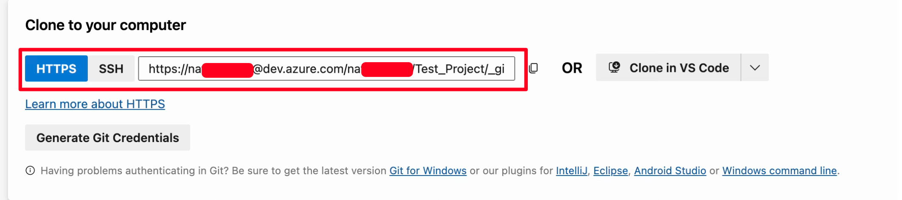ホスティングサービス: Azure DevOps
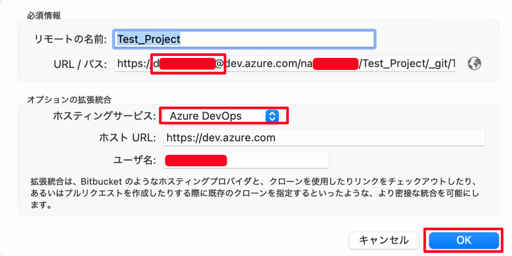> 注意: https://〜＠の間をAzure DevOpsに登録したメールアドレスに変更する
手順４：認証エラーが出たときの対処
＜エラーの対処＞
- 保存済み認証情報の削除（Mac / Windows 共通の考え方）
- Mac：Keychain Access（キーチェーンアクセス）で azure.com関連を削除。
- Windows：資格情報マネージャーで azure.com関連の保存情報を削除。
- URLの再確認
- 手順3-2でAzure DevOpsの Repos 画面で、「HTTPS」の URL をコピペし、https://〜＠の間をAzure DevOpsに登録したメールアドレスに変更したか。
- ssh://から始まる URL を誤って使っていないか。
過去のPATが残っている場合、認証されないため、キーチェンアクセスでSourceTreeで検索すると上記のようにazure.comが記載されたURLが表示されるため、該当のURLを削除して再度PATを発行する必要がある。
手順５：ブランチ運用例（個人開発向け）
＜個人開発でよく使うシンプルな運用例＞
- ブランチの切り方
- main：リリース用（安定版）
- develop：開発中のメインブランチ
- 必要に応じて feature/◯◯ ブランチを切って作業
- フローの一例
- develop ブランチで普段の開発・コミット・push。
- リリースタイミングで develop → main にマージ。
- main からビルド・配布。
- develop ブランチは削除せず、そのまま次の開発に使う。
- タグによるバージョン管理
- v1.0.0 のように<メジャーバージョン>.<マイナーバージョン>.<パッチバージョン>とします
- 開発版は 0.1.0 から、正式版は 1.0.0 から始めます
- バグ修正では<パッチバージョン> を、機能性の追加では<マイナーバージョン>を、後方互換性を持たない変更では<メジャーバージョン>を上げます
- プレリリースバージョンは 1.0.0-alpha, 1.0.0-alpha.1のように -<ドットで区切られた識別子> を付加します。これらの例は 1.0.0 よりも前のバージョンであることを表します。
プレリリースバージョンは早い順に 1.0.0-alpha < 1.0.0-alpha.1 < 1.0.0-alpha.beta < 1.0.0-beta < 1.0.0-beta.2 < 1.0.0-beta.11 < 1.0.0-rc.1 < 1.0.0 のようになります。
まとめ
- 手順1（Azure DevOps） プロジェクトとリポジトリを作成し、HTTPS の Clone URL と Personal Access Token (PAT) を用意する。
- 手順2（Unity）
Unity プロジェクトを作成し、
.gitignoreなど Git 向け設定を済ませてから初回コミットできる状態にする。 - 手順3（Sourcetree） ローカル（Unity）リポジトリとリモート（Azure DevOps）リポジトリを Sourcetreeに連携する。
- 手順4（トラブル対応） 認証エラーが出た場合は、キーチェーン／資格情報に残っている古い PAT を消し、URLを再確認する。
- 手順5（運用） main / develop / feature ブランチとタグを組み合わせて、リリース用と開発用の履歴をきれいに分けて管理する。
ひととおり流れを作っておけば、今後の Unity プロジェクトでも「Azure DevOps + Sourcetree」のセットアップをほぼ同じ手順で再利用できます。